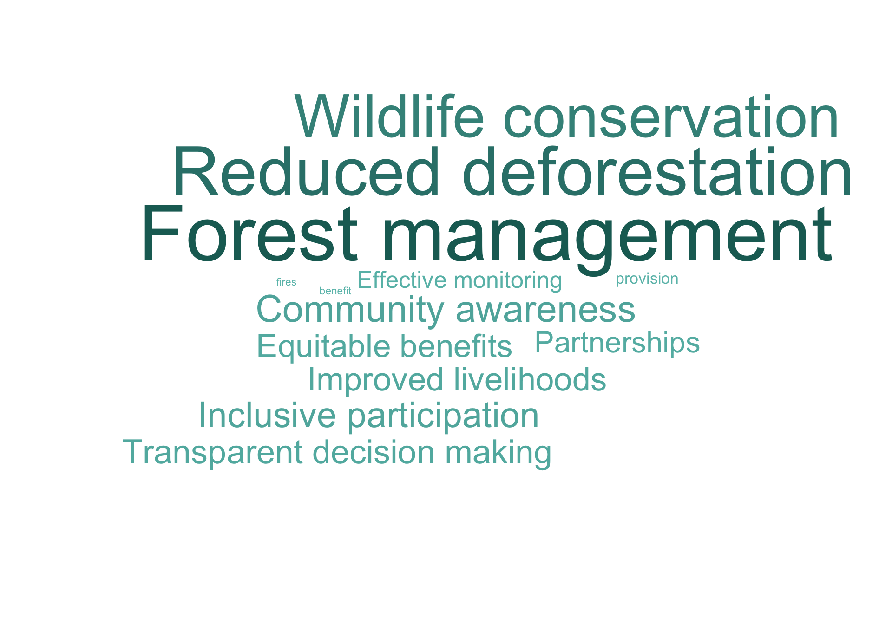

Code
prefix_w <- "opportunitiesb_for_improved_cfm_implementation_cfm_working_aspects_"
working_labels <- c(
"effective_management_of_forest_resources_e_g_sustainable_harvesting_restoration" = "Forest management",
"reduction_in_deforestation_and_forest_degradation" = "Reduced deforestation",
"increased_wildlife_conservation_and_biodiversity" = "Wildlife conservation",
"equitable_benefit_sharing_among_community_members" = "Equitable benefits",
"active_participation_of_women_youth_and_marginalized_groups_in_cfm_activities" = "Inclusive participation",
"improved_livelihoods_and_income_generating_opportunities_through_cfm_activities" = "Improved livelihoods",
"successful_partnerships_with_private_enterprises_or_external_institutions" = "Partnerships",
"successful_partnerships_with_traditional_leaders" = "Traditional leaders",
"improved_infrastructure" = "Improved infrastructure",
"effective_monitoring_and_reporting_of_cfm_outcomes_and_impacts" = "Effective monitoring",
"transparent_and_fair_decision_making_processes_within_the_community" = "Transparent decision making",
"strong_community_awareness_and_involvement_in_cfm_activities" = "Community awareness"
)
full_w_vars <- paste0(prefix_w, names(working_labels))
# Frequency counts from binary checkbox variables
working_freq <- cfmg |>
filter(interview_type %in% c("cfmg_female", "cfmg_male", "cfmg_youth")) |>
select(all_of(full_w_vars)) |>
summarise(across(everything(), ~ sum(. == 1, na.rm = TRUE))) |>
pivot_longer(everything(), names_to = "variable", values_to = "freq") |>
mutate(word = working_labels[sub(prefix_w, "", variable, fixed = TRUE)]) |>
filter(freq > 0) |>
select(word, freq)
# Word frequencies from open-ended comments
comment_freq <- cfmg |>
filter(interview_type %in% c("cfmg_female", "cfmg_male", "cfmg_youth")) |>
select(comment = opportunitiesb_for_improved_cfm_implementation_cfm_working_aspects_comment) |>
drop_na(comment) |>
unnest_tokens(word, comment) |>
anti_join(stop_words, by = "word") |>
filter(nchar(word) > 2, !word %in% c("cfm", "cfmg", "forest", "community", "people")) |>
count(word, name = "freq") |>
filter(freq > 1)
# Combine checkbox labels and comment words
working_all <- bind_rows(working_freq, comment_freq) |>
group_by(word) |>
summarise(freq = sum(freq), .groups = "drop")
set.seed(42)
ggplot(working_all, aes(label = word, size = freq, colour = freq)) +
geom_text_wordcloud(eccentricity = 0.65, seed = 42) +
scale_size(range = c(3, 22)) +
scale_colour_gradient(low = "#6ABFB8", high = "#1A6B63") +
theme_minimal(base_size = 14) +
theme(plot.margin = margin(0, 0, 0, 0))